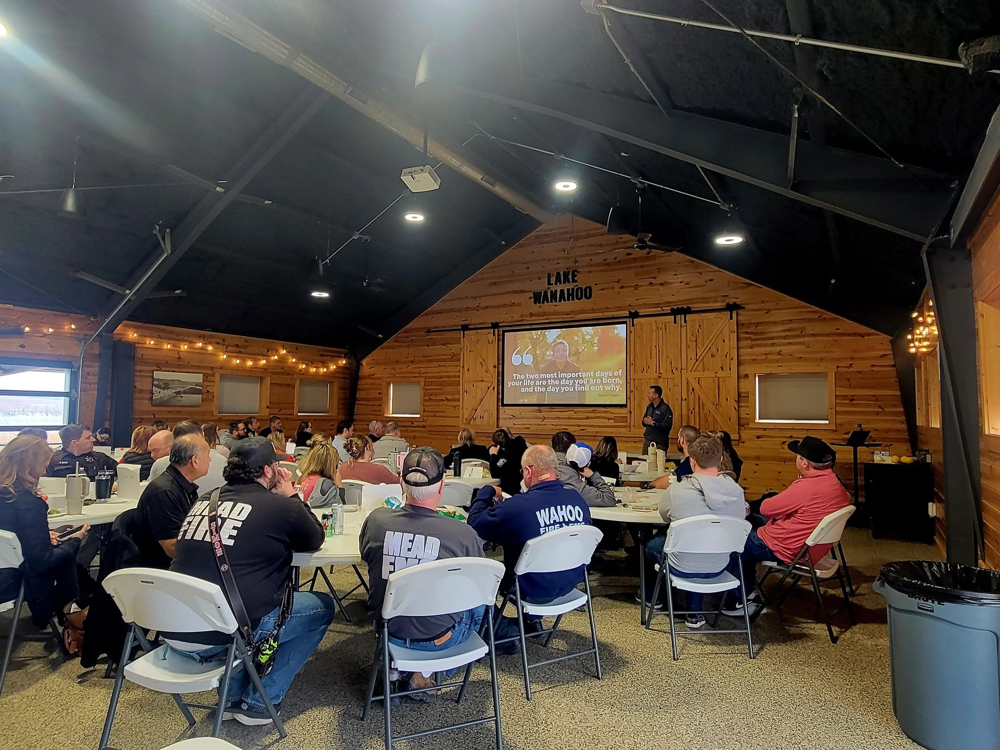

By Mackenzie Evans
Wahoo, Neb -- Captain Gerald Turning Junior, of New Jersey, is a retired police officer. He is also a dad to an autistic son, 21 year old Eric. As a police officer, he had already responded to calls involving missing autistic children and mental health crises. When his son was diagnosed with autism, he realized that his previous training did not cover everything.
“They should have taught me this stuff,” Turning said in his presentation.
Turning explained that previous police training wasn’t enough to fully understand autism. This gap and his personal connection led him to create Blue Bridge Autism Safety. His organization trains first responders across the country by educating them on autism.
Turning brought his training to Wahoo on March 4. Saunders County Youth Services hosted the event at the Clint Johannes Education Building at Lake Wanahoo.

Over 50 people attended, including law enforcement, medical personnel, social workers and special education teachers. In a show of hands, only three of the 56 attendees had received previous training specific to autism.
This training came at an important time as the Nebraska legislature suggested LB 784, a bill that would reduce police training. Previous Nebraska law set by LB 51 in 2021 required law enforcement to complete an annual review of course material over mental health topics.
In April, the bill passed and training for mental health crises was reduced to an every three year review.
Current mental health training does not always cover developmental disabilities, but the crisis training can be vital to some situations involving autistic people.
Autism specific training provided by Blue Bridge Autism Safety and Autism Action Partnership help fill in the gaps that required mental health training doesn’t address. Autism Action Partnership is an organization from Omaha that has conducted similar trainings in Seward, Omaha, Kearney and Lexington.
Turning’s presentation focused on helping attendees understand autism and use this knowledge to find missing people.
According to the Autism Society, children with autism are four times more likely to run away than their peers.
When autistic children do run away, the situation can become tragic.
Turning said that children on the autism spectrum are 160 times more likely to drown than their peers. 91 percent of deaths in autistic children under the age of 14 are from drowning.
Turning discussed the importance of programs like Project Lifesaver.
Project Lifesaver is a program offered through police and sheriff’s offices that uses radio technology to locate missing people with disabilities like autism and Alzheimer's.
Turning explained that autistic people are not just “wandering”. He explained that individuals who run away always have a goal. Figuring out what that goal is can help first responders find the individual.
Turning said that it is important for first responders to ask caretakers questions, such as:
“How do they communicate?”
People with autism may or may not be able to speak. Some may use sign language or an Augmentative and Alternative Communication device, which is a tablet that they can use to communicate.
“Do they understand danger?”
One of the reasons drowning risk is higher for autistic individuals, is because they may or may not understand the danger involved with deep water.
“What do they hate?”
People on the spectrum may be more sensitive to light and noise. They may feel the need to escape situations that are painful to their senses.
Knowing if the person is sensitive to lights or noise can help first responders. It explains why they may have left, which places they may avoid and how to approach them.
“What do they love?”
Other people on the spectrum may be more sensory seeking. For example, they may seek water because it is soothing to the senses. They may also like to climb things.
“Are they dressed appropriately for the weather?”
In Nebraska’s climate, missing people face the risk of hypothermia or heat stroke.
When officers receive proper training, they can play a vital role in finding missing people on the autism spectrum. However, when officers do not understand autism, the situation can become violent.
Turning said police may be trained to identify symptoms such as poor depth perception, poor coordination, avoidance of eye contact and repetitive motions as signs of intoxication. However, sober people on the spectrum may have the same symptoms. This can lead officers to falsely assume the individual is drunk or high.
In relation to autism, these repetitive motions are called “stimming” and are often used by the individuals as self soothing mechanisms to calm down.
Turning showed the attendees Bodycam footage in his presentation of one of these incidents. The incident took place in Arizona in 2017. In this incident, a cop mistook an autistic teenager’s repetitive movements to be a sign of stimulant use and pinned him to the ground.
When questioned, the teenager told the officer “I’m stimming.”
The officer did not understand what that meant and continued to use excessive force. Soon, the teenager was on the ground screaming and suffered an ankle injury as a result.
Incidences like these show the need for autism specific training for officers and first responders, beyond regular mental health crisis training.
Officer Stephanie Schroeder from York Police Department said this was her first time receiving autism specific training after working as an officer for four years. She said the training helped her understand autism, especially from a sensory perspective.